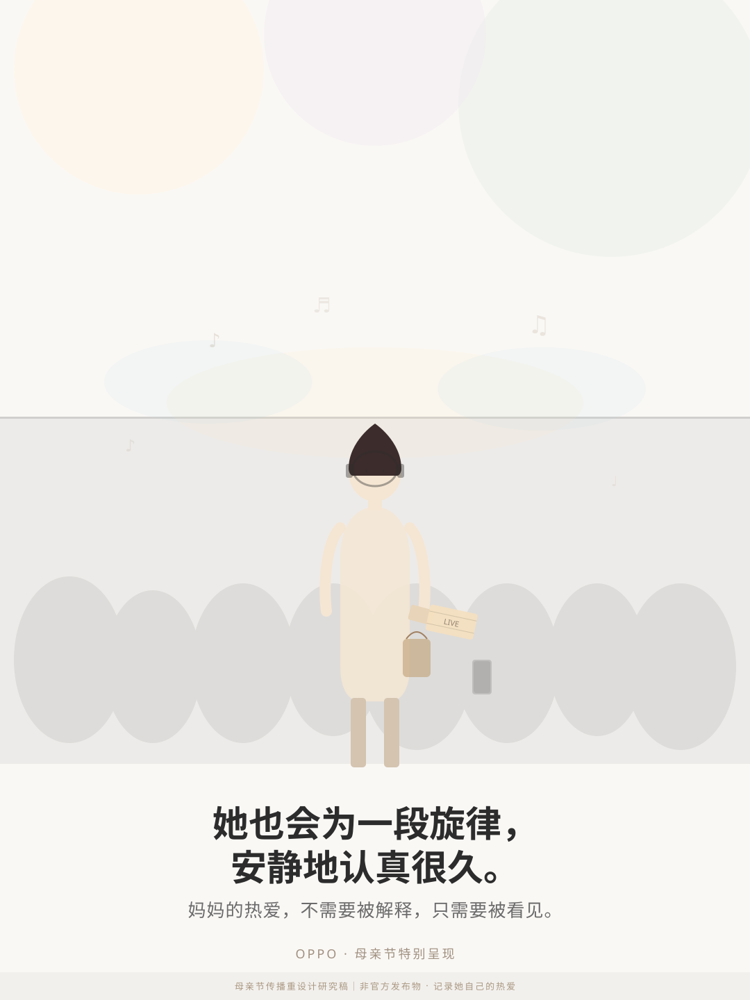
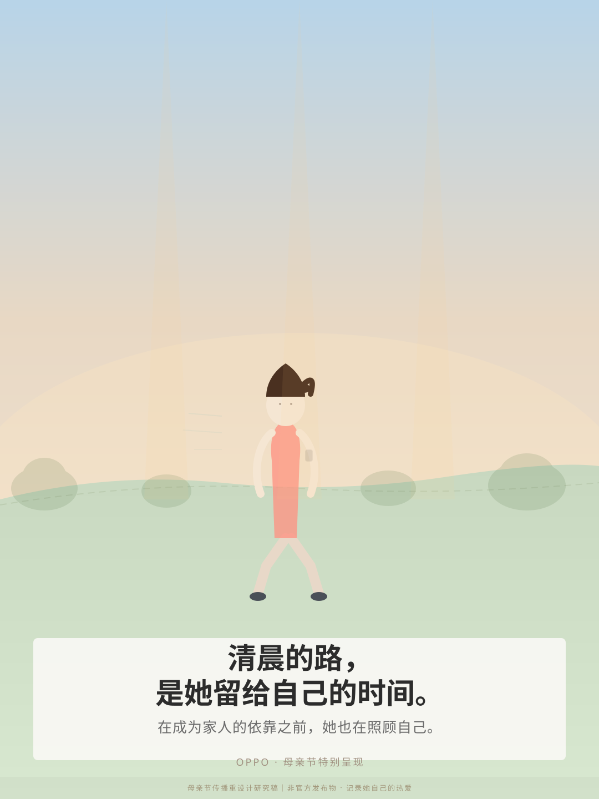
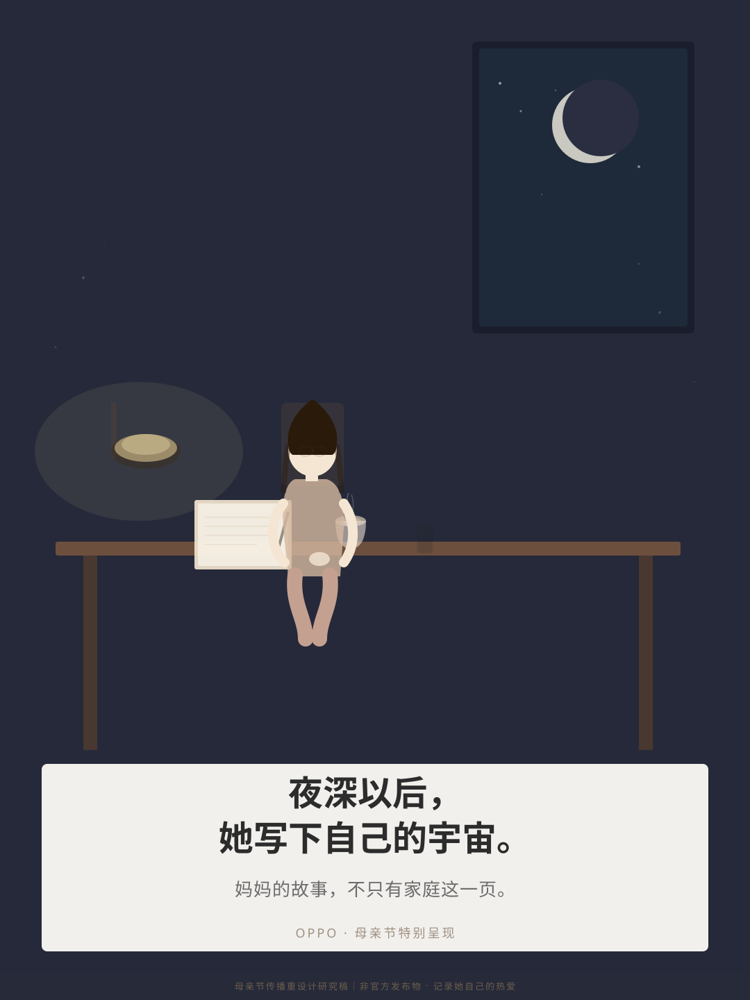
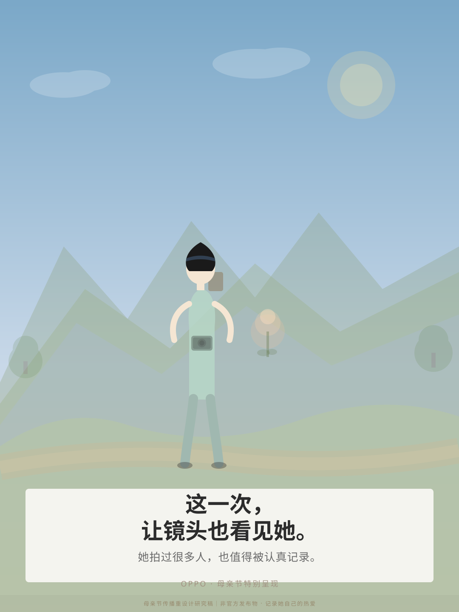
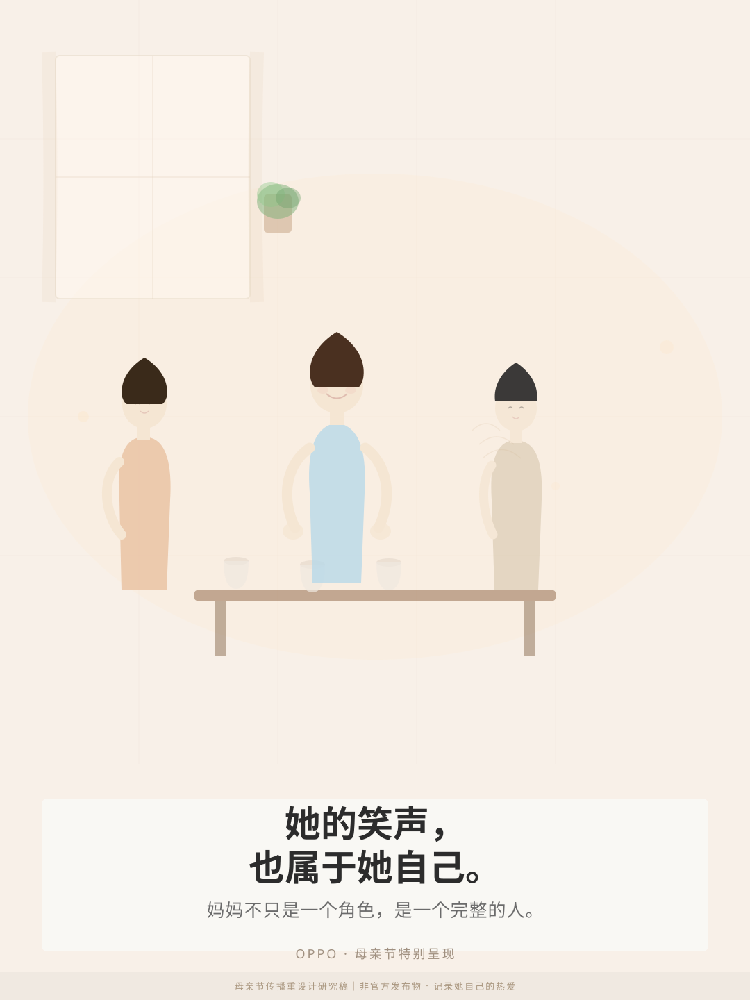

方案概览
本方案在"不颠覆原活动初衷"的前提下，修正了母亲节传播的表达方式，用多场景、多人物的生活叙事替代原来的高风险符号体系。
📌 设计原则
从"圈层梗"改为"生活叙事"；从"男性关系绑定"改为"个人热爱独立"；从"猎奇反差"改为"温柔观察"。
🔍 核心洞察
妈妈每天都在记录家人，但我们很少看见——认真对待自己热爱的那件事的妈妈，才是最闪闪发光的样子。
🎯 主 题
妈妈，也有自己的热爱。
她的热爱，不需要被解释，只需要被看见。
🛡️ 风险评级
本重设计方案在 11 项风险维度上均给出规避策略；具体判断仍需人工审稿确认。系统性改善详见 campaign_risk_review.html。
海报 mockup（5张）
原创 SVG 矢量图 · 抽象人物剪影 + 生活场景 · 无真实照片 · 无外部图片 · 无 OPPO logo

海报 1：演唱会前的妈妈
🎵 音乐 · 期待 · 属于自己的时间
她也会为一段旋律，安静地认真很久。
妈妈的热爱，不需要被解释，只需要被看见。
设计目标：展示妈妈在某个属于自己的时刻，认真准备的样子。
为什么更安全：不依赖"追星/偶像/老公"等敏感符号；热爱与"个人兴趣"绑定，自然、积极、安全。
风险避让：无"老公"、"婚纱"、"爸爸对比"等高风险表达。
为什么更安全：不依赖"追星/偶像/老公"等敏感符号；热爱与"个人兴趣"绑定，自然、积极、安全。
风险避让：无"老公"、"婚纱"、"爸爸对比"等高风险表达。
影像任务：低光人像 · 舞台氛围 · 情绪记录

海报 2：清晨跑步的妈妈
🏃♀️ 运动 · 清晨 · 自我照顾
清晨的路，是她留给自己的时间。
在成为家人的依靠之前，她也在照顾自己。
设计目标：展示妈妈在清晨照顾家人之前，先照顾自己的时刻。
为什么更安全：用"自我照顾"替代"颠覆传统母亲形象"；温和、尊重，不暗示"家庭是负担"。
风险避让：不以"爸爸/丈夫"为对比背景；不以"逃离家庭"为叙事框架。
为什么更安全：用"自我照顾"替代"颠覆传统母亲形象"；温和、尊重，不暗示"家庭是负担"。
风险避让：不以"爸爸/丈夫"为对比背景；不以"逃离家庭"为叙事框架。

海报 3：深夜写作的妈妈
📝 写作 · 夜深 · 精神独立
夜深以后，她写下自己的宇宙。
妈妈的故事，不只有家庭这一页。
设计目标：展示妈妈完成家务后，拥有属于自己的精神世界的时刻。
为什么更安全：母亲的"自我"表现为内在精神状态，完全不依赖任何外部符号；深夜场景与"自我反思"自然契合。
风险避让：无任何与家庭/男性/社会关系的对比框架；纯精神主体性呈现。
为什么更安全：母亲的"自我"表现为内在精神状态，完全不依赖任何外部符号；深夜场景与"自我反思"自然契合。
风险避让：无任何与家庭/男性/社会关系的对比框架；纯精神主体性呈现。

海报 4：旅行摄影的妈妈
📷 旅行 · 记录 · 探索世界
这一次，让镜头也看见她。
她拍过很多人，也值得被认真记录。
设计目标：展示妈妈在旅途中的样子——她有自己的想看的风景，有自己的记录视角。
为什么更安全：自然契合 OPPO 手机"记录"功能；"她想看世界"是正常个人追求，非"逃离家庭"。
风险避让：不以"爸爸在家带孩子"为背景暗示；强调"记录"而非"逃跑"。
为什么更安全：自然契合 OPPO 手机"记录"功能；"她想看世界"是正常个人追求，非"逃离家庭"。
风险避让：不以"爸爸在家带孩子"为背景暗示；强调"记录"而非"逃跑"。

海报 5：朋友聚会中的妈妈
👭 友情 · 笑声 · 社会联结
她的笑声，也属于她自己。
妈妈不只是一个角色，是一个完整的人。
设计目标：展示妈妈作为朋友、社会人的一面，呈现母亲社会身份的多元性。
为什么更安全：用正面、温暖的方式呈现母亲的社会联结；不以任何负面框架为对比。
风险避让：不以"终于可以放松"暗示"家庭是负担"；不以"没有朋友"作为负面框架。
为什么更安全：用正面、温暖的方式呈现母亲的社会联结；不以任何负面框架为对比。
风险避让：不以"终于可以放松"暗示"家庭是负担"；不以"没有朋友"作为负面框架。
活动策略要点
🎯 目标受众
为母亲准备节日表达的子女、伴侣与家庭成员；以及希望被看见自我生活与热爱的妈妈本人。
💡 核心洞察
妈妈每天都在记录家庭成员的美好时刻，但我们很少看见——认真对待自己热爱的那件事的妈妈，才是最闪闪发光的样子。
📣 传播主张
妈妈，也有自己的热爱。她的热爱，不需要被解释，只需要被看见。
📱 产品露出
OPPO 手机作为"记录工具"出现在画面中或社交文案中，服务于"记录她自己的热爱"主题，不作为画面主角。
🚫 禁止词
两个老公 / 穿婚纱 / 爸爸不如 / 追星妈妈 / 恋爱脑 / 老公 / 妈妈疯了 / 少女心 / 不顾家 等
✅ 推荐词
热爱 / 认真 / 看见 / 记录 / 自己的时刻 / 完整的人 / 发光 / 值得
相关文件
本展示页相关的完整研究文件，请参考以下路径：
📁 extensions/oppo_1_3_crisis_and_redesign/
📁 crisis_response/
• crisis_response_strategy.md
• better_public_apology_draft.md
• pinned_social_response.md
• media_qa.md
• internal_memo_employee_protection.md
• anti_doxxing_boundary_statement.md
• crisis_response_checklist.json
📁 campaign_redesign/
• campaign_redesign_strategy.md
• campaign_copy_system.md
• poster_concepts.md
• campaign_risk_review.md
• revised_campaign_board.md
📁 poster_mockups/
• poster_01_concert_mom.svg
• poster_02_running_mom.svg
• poster_03_writing_mom.svg
• poster_04_travel_photo_mom.svg
• poster_05_friends_mom.svg